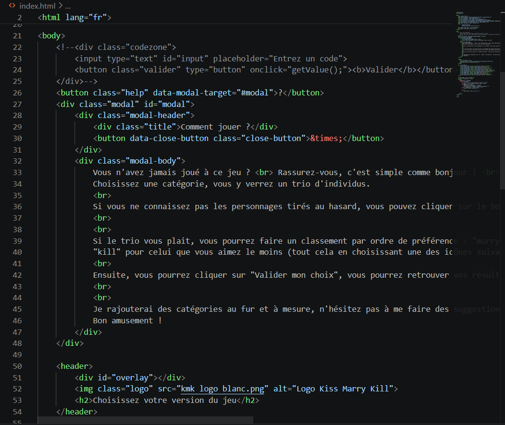
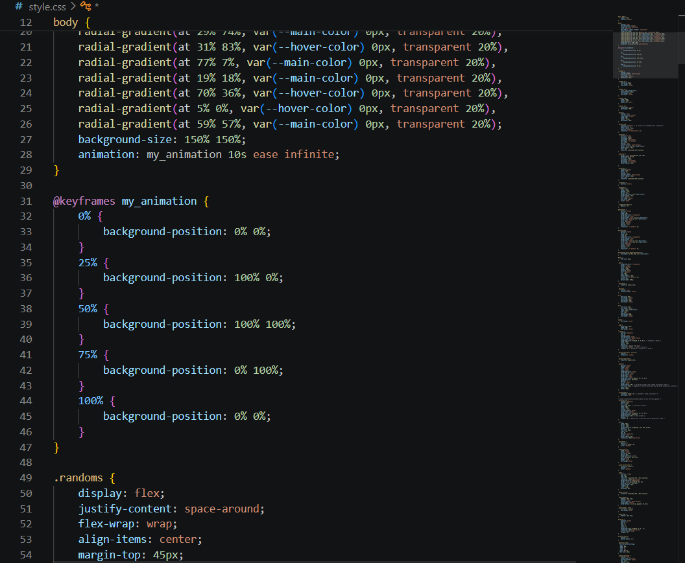
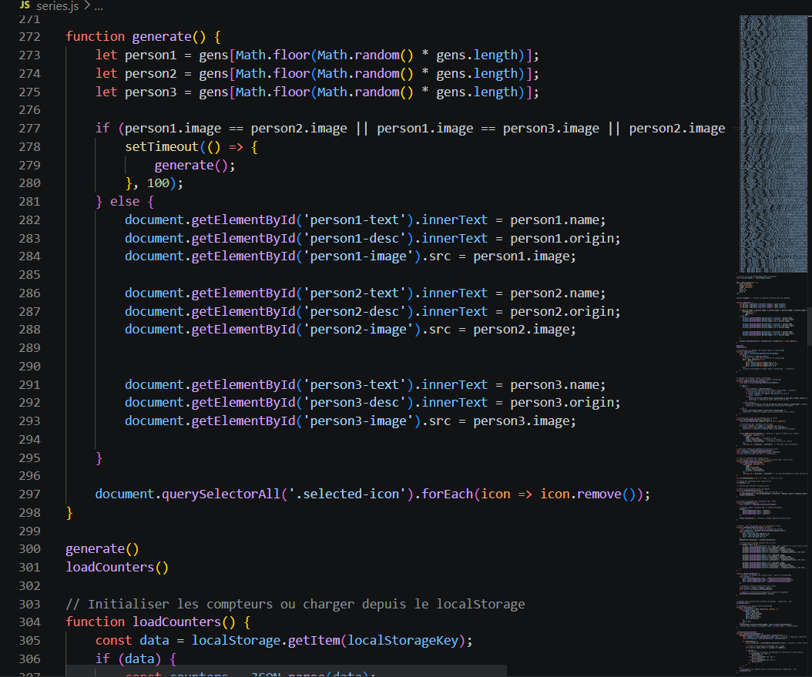

Why I built this
Like millions of others, I used to watch Kiss, Marry or Kill videos on YouTube. But there was a catch: you could only watch, never actually play. In 2021, I decided to stop being a spectator and started coding my own version to make the experience interactive and infinite.
What began as a simple coding experiment quickly became my personal digital laboratory. It is where I test new ideas, listen to user suggestions, and play with gamification tools. Beyond the fun, this project is my way of staying sharp technically, ensuring I can speak the same language as the developers I work with every day.
UX/UI Redesign
Developing the product myself allowed me to iterate in real-time. The architecture was designed to be modular.
Interactive Home Page
Revamped layout with regularly updated categories and a helping modal to guide new players through the gaming mechanics.
Dynamic Trio Selection
Randomized selection from a database of 300+ characters. Votes are stored in local storage to maintain persistence without the need for a complex backend, allowing users to track their history.
Podium
Display the three most chosen characters for each option (Kiss, Marry, Kill). Currently, it works by storing user votes locally (localStorage), which means the data disappears when the browser cache is cleared.
Tech Expertise & Product Ownership
Developing the product myself allowed me to iterate in real-time. The architecture was designed to be modular.



Future Features
The next phase of KMK focuses on expanding social interaction and deepening user engagement. Based on current community feedback, the development roadmap includes a real-time multiplayer mode to transform the individual experience into a shared social event. I am also working on advanced filtering systems to allow users to create and share their own custom decks, further decentralizing content creation.
From a technical standpoint, this evolution serves as a playground for testing WebSockets for instantaneous data synchronization and exploring more complex database architectures. This continuous iteration ensures the platform stays aligned with modern gaming standards while reducing cognitive friction during high-speed social play.
Local multiplayer mode, linked to the players' phone which could be used as remotes.
A podium to show all users' votes.
A global category mixing all the others.